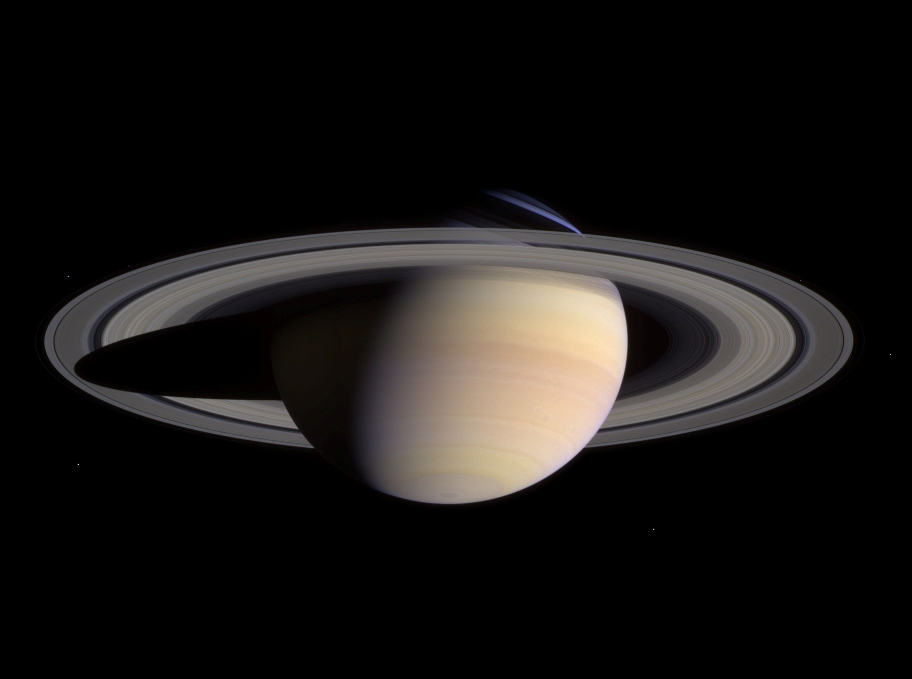

Saturn, the sixth planet in the solar system.

Saturn
Saturn is the sixth planet from the Sun and the second largest planet in the Solar System, after Jupiter. Named after the Roman god of agriculture, its astronomical symbol (♄) represents the god's sickle. Saturn is a gas giant with an average radius about nine times that of Earth. While only one-eighth the average density of Earth, with its larger volume Saturn is just over 95 times more massive.


Orbital Characeristics
- Aphelion
- 1513325783 km
- Perihelion
- 1353572956 km
- Orbital Period
- 10759.22 d
- Average orbital speed
- 9.69 km/s
Physical Characteristics
- Mean Radius
- 58232±6 km
- Mass
- 5.6846×1026 kg
- Surface Gravity
- 10.44 m/s²
- Axial Tilt
- 26.73°